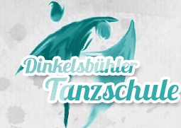

01
01
Gesellschaftstanz
Erste Schritte wagen, Erlerntes auffrischen, gemeinsam ein neues Hobby entdecken oder sich für die Hochzeit fit machen. Ein Einstieg ist auch als Einzelperson möglich.
Details & Termine ↗
Kurs finden ↗TANZEN · LERNEN · GEMEINSAM ZEIT VERBRINGEN
Vom ersten Schritt bis zum Lieblingskurs: persönlich, professionell und mit genau der familiären Atmosphäre, für die die Dinkelsbühler Tanzschule seit Jahrzehnten steht.


AKTUELL · HERBST 2026
Neben den laufenden Kursen gibt es regelmäßig Tanznachmittage, Übungsabende und Tanzabende. Der nächste Tanznachmittag findet am 18. Oktober statt — entspannt, offen und mit viel Zeit auf der Tanzfläche.
Alle Termine ansehen ↗02 / KURSE
Ob klassischer Paartanz, Hip Hop, Zumba oder Kindertanz: Finden Sie schnell den Kurs, der zu Ihnen, Ihrem Alltag und Ihrem Tanzlevel passt.
01
Erste Schritte wagen, Erlerntes auffrischen, gemeinsam ein neues Hobby entdecken oder sich für die Hochzeit fit machen. Ein Einstieg ist auch als Einzelperson möglich.
Details & Termine ↗ 02
02Aktuelle Chartmusik, beliebte Tänze und Special Dance Nights — stressfrei, locker und ohne festen Tanzpartner bei der Anmeldung.
Mehr erfahren ↗ 03
03Spielerisch Rhythmusgefühl, Konzentration, Koordination und soziales Verhalten fördern. Die Tanzmäuse tanzen gemeinsam mit einer erwachsenen Bezugsperson.
Schnupperstunde ↗ 04
04Choreografien zu aktueller Musik und verschiedene Styles mit den Coaches Joy und Regina. Energie, Ausdruck und gemeinsamer Flow.
Hip Hop entdecken ↗ 05
05Mitreißende Rhythmen, Bewegung und Fitness in einem flexiblen Kurssystem. Trainieren, so oft es in den eigenen Alltag passt.
Zum Zumba-Angebot ↗ 06
06Eine Zeitreise in die 50er: Swingrhythmen, Petticoat-Vibes und jede Menge Lebensgefühl — mit oder ohne akrobatische Elemente.
Details ↗
03 / WIR
Das Team besteht aus Tanzlehrerinnen und Tanzlehrern mit mehrjähriger professioneller Ausbildung im ADTV sowie spezialisierten Trainerinnen und Trainern. Regelmäßige Weiterbildungen halten den Unterricht fachlich aktuell — die familiäre Atmosphäre bleibt.
04 / TEAM
Ein Team, das Tanz nicht nur unterrichtet, sondern lebt — mit professioneller Ausbildung, regelmäßigen Weiterbildungen und persönlicher Begleitung.

Gründete die Tanzschule 1979. Unterrichtet Erwachsene, Spezialkurse und die Seniorentanzgruppe.

Leitet die Tanzschule seit 2010, unterrichtet Jugendliche und Erwachsene, Kindertanz und West Coast Swing; außerdem ZUMBA-Trainerin und Ausbilderin.

ADTV-Tanzlehrerin mit Zusatzausbildungen in Zumba, Videoclipdancing und Salsa. Leitet den Fitnessbereich.

Fachtanzlehrer für West Coast Swing und ADTV-Kindertanzlehrer. Choreografiert und unterrichtet die Jugendshow-Gruppe.

Hip Hop-Fachtanzlehrerin mit Erfahrung in Ballett, Gesellschaftstanz und West Coast Swing sowie Zusatzausbildungen in Boogie und Lindy Hop.

05 / DAS STUDIO
Die moderne Tanzschule bietet zwei große Tanzsäle mit Tanzparkett sowie aktueller Licht- und Soundtechnik. Dazu kommt ein gemütlicher Barbereich, in dem nach dem Kurs nicht sofort Schluss sein muss.
06 / COMMUNITY
Abschlussbälle, Tanznachmittage, Tanzabende, Special Dance Nights, Kinderpartys sowie Auftritte und Meisterschaften machen aus Kursen eine Community.
Ein entspannter Sonntagnachmittag für alle, die einfach gerne tanzen und nette Leute treffen.
Alle Eventtermine ↗Gemeinsam tanzen, essen und den Abend genießen. Anmeldung erforderlich.
Details ↗Für aktuelle und ehemalige Teilnehmerinnen und Teilnehmer der Jugendtanzkurse.
Termine ansehen ↗07 / JOBS
08 / KONTAKT
Ob Kurs, Schnupperstunde, Tanzpartner-Suche oder Privatstunde — kurz melden, dann findet das Team gemeinsam mit dir den passenden Einstieg.
DINKELSBÜHLER TANZSCHULE SCZESNY
Südring 1a